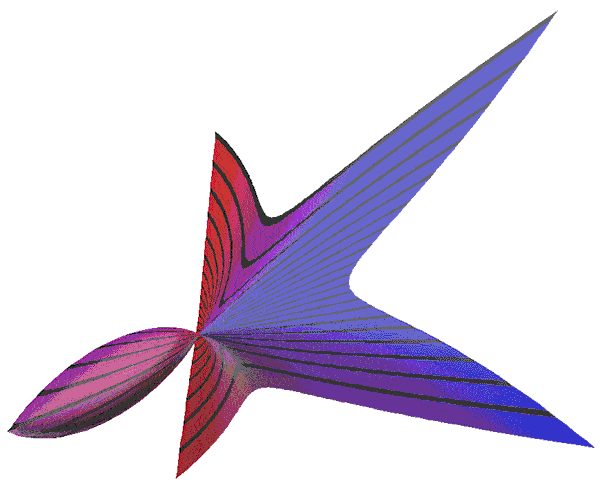
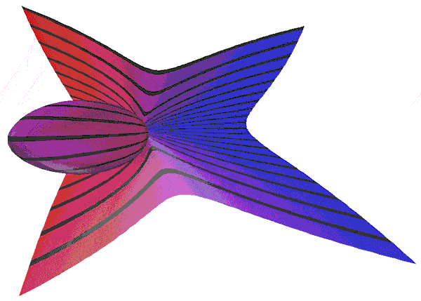
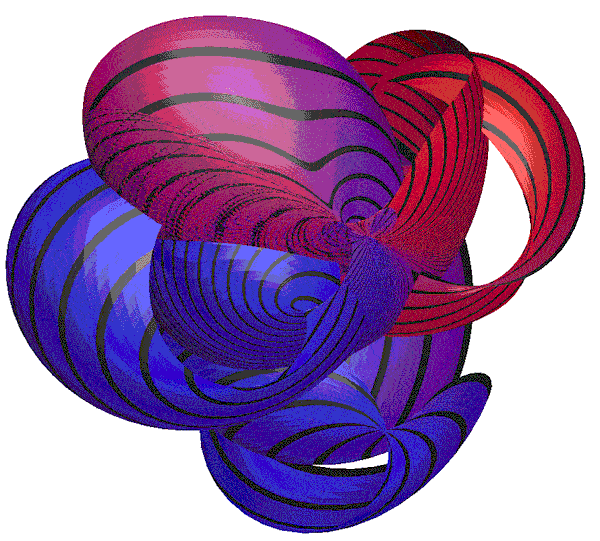
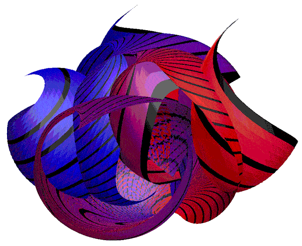

Twisted PlaneBy Roger BagulaRendering by Paul Bourke June 1999
 
C Source code by Paul Bourke
#include "stdio.h"
#include "stdlib.h"
#include "math.h"
#include "paulslib.h"
int N = 100;
double umin = -1, umax = 1;
double vmin = -1, vmax = 1;
int main(int argc,char **argv)
{
int i,j;
double u,v;
XYZ p;
COLOUR colour = {1.0,0.0,0.0}, black = {0.0,0.0,0.0};
COLOUR green = {0.0,1.0,0.0}, red = {1.0,0.0,0.0};
COLOUR blue = {0.0,0.0,1.0};
printf("CMESH\n%d %d\n",N+1,N+1);
for (i=0;i<=N;i++) {
for (j=0;j<=N;j++) {
u = umin + i * (umax - umin) / (double)N;
v = vmin + j * (vmax - vmin) / (double)N;
p.z = sqrt(u*u + v*v) / sqrt(2.0);
p.x = (1-p.z)*u + p.z*(1-u);
p.y = (1-p.z)*v + p.z*(1-v);
colour = GetColour(v,vmin,vmax,2);
if (i % 5 == 0)
colour = black;
printf("%g %g %g %g %g %g 1\n",p.x,p.y,p.z,
colour.r,colour.g,colour.b);
}
}
}
#include "paulslib.c"
Basic code by Roger BagulaSET MODE "color" SET WINDOW 0,1026,0,750 SET COLOR MIX (1) 0,0,0 PRINT"parametric twist plane: DOUBLE" SET MODE "color" SET WINDOW 0, 1026,0,750 SET COLOR MIX(1) 0,0,0 PRINT" parametric twist plane: DOUBLE" PRINT" LOOKS LIKE A FOLIUM OR STROPHOID 3D PROJECTION" PRINT" by R. L. Bagula 14 June 1999" LET s1=1000/2.5 LET s2=s1*750/1026 FOR t= 1 to -1 step -1/200 LET c=c+1 FOR p= 1 to -1 step -1/200 LET pp=sqr(p^2+t^2)/sqr(2) LET xx=(1-pp)*p+pp*(1-p) LET yy=(1-pp)*t+pp*(1-t) SET COLOR ABS(128-c) PLOT 1026/2+s1*xx-300,750/2+s1*(750/1026)*yy-250; NEXT p PLOT NEXT t END  
|